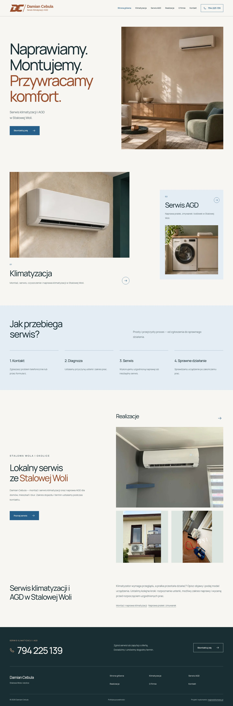
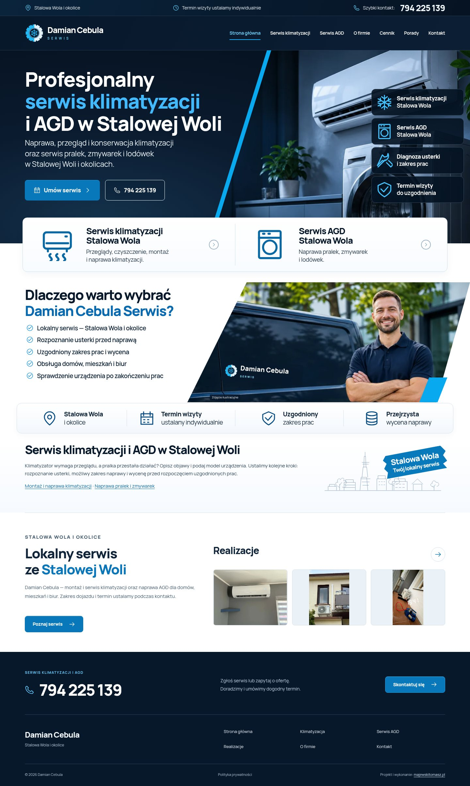

Jak czytać porównanie
To porównanie dwóch wersji witryny. Nowa plansza referencyjna została wklejona w rozmowie i nie ma osobnego pliku źródłowego w repozytorium. Nie jest tutaj zastąpiona zrekonstruowanym obrazem. Kadr 967 px pozwala ocenić proporcje wobec głównej kompozycji po lewej stronie planszy; nie jest wynikiem pixel-diff.
Cennik i Porady powstały w wersji 3.0, dlatego mają wyłącznie aktualne zrzuty. Mapa na lokalnych screenshotach jest podpisaną atrapą testową. Widoczność i treść opinii zależą od rzeczywistej konfiguracji Trustindex. Zrzuty nie są potwierdzeniem wdrożenia produkcyjnego.
Zakres zmian, SEO i zasady edycji · Źródła fotografii i ilustracji